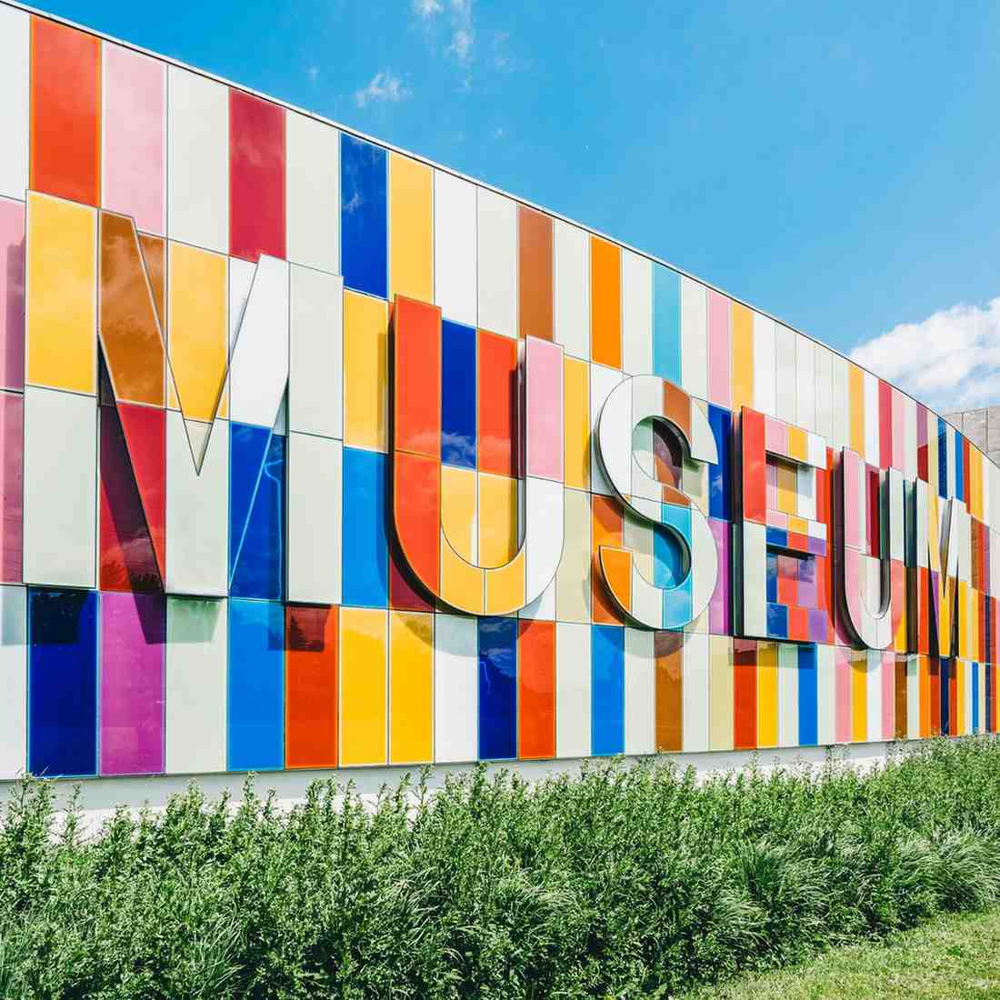

Visit Us
How to Get to the Community Science Museum
The Community Science Museum is conveniently located at 123 Innovation Lane, right in the heart of the city. Whether you're travelling by car, public transport, or even by bicycle, getting here is easy!
Under the picture, we’ve shared all the fun ways you can get to the museum—whether you walk, hop on the metro, ride in a car, or choose your favorite way to travel! We can’t wait to see you here!
By Car
If you're driving, we’re easily accessible via the main highway, Route 42. From downtown, take Exit 17B and follow signs for Innovation Lane. We offer a spacious parking lot with over 200 spots, including dedicated spaces for electric vehicles equipped with charging stations. Parking is free for all museum visitors.
By Metro
Take the Blue Line Metro to Greenhill Station, located just a 5-minute walk from the museum. From the station, follow the signs for Innovation Lane or use the marked pedestrian pathway leading directly to our entrance.
By Bus
Several city bus routes near the museum.
- Route 12: Stops directly in front of the main entrance.
- Route 34: Drops you at Greenhill Station, just a short walk away.
- Route 55: Connects the museum with neighboring districts and arrives every 15 minutes.
On Bicycle
Cyclists are always welcome! The museum is connected to the city’s GreenCycle Trail, with a dedicated bike lane along Innovation Lane. We provide secure bike racks right at the entrance, and there’s even a self-service repair station available on-site.
On Foot
Exploring the area? The museum is a pleasant 15-minute walk from downtown. Follow the scenic pathway along the EcoRiver Trail, which leads straight to our doors.
The Science Discovery Museum is committed to ensuring everyone can visit with ease. All metro, bus, and pedestrian routes are fully accessible, and we offer priority parking for guests with mobility needs.
Map